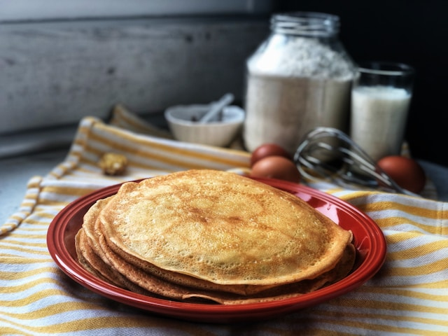

Ingredients (2 pers.)
- 2 dl flour
- 4 dl whole milk
- 2 eggs
- 1-4 tbs water
- 1 pinch of salt
- Lots of butter

Instructions
- Mix the flour and the salt in a large bowl.
- Whisk in half the milk until it becomes a smooth batter. This prevents lumps. Whisk in the rest of the milk.
- Whisk in the eggs until combined.
- Add the water and stir. The more water you add, the softer and more elastic the pancakes will be.
- Heat a frying pan over medium heat (I go with a 7-7.5 out of 12) and wait for it to become hot.
- Add a tablespoon of butter to the pan and make sure to cover the entire bottom. If it turns brown you should lower the heat. Pour in half a soup ladel of pancake batter and swirl it around the pan until the bottom is covered. Fry for a couple of minutes
- Once you are satisfied with the color, flip the pancake over on its other side. Fry for a shorter amount than the first side.
- When the pancake is ready, transfer it to a plate where you will stack all of your pancakes. Then repeat the process (steps 6-8) until no batter remains.
- Serve with whipped cream and jam or sugar and lemon juice.